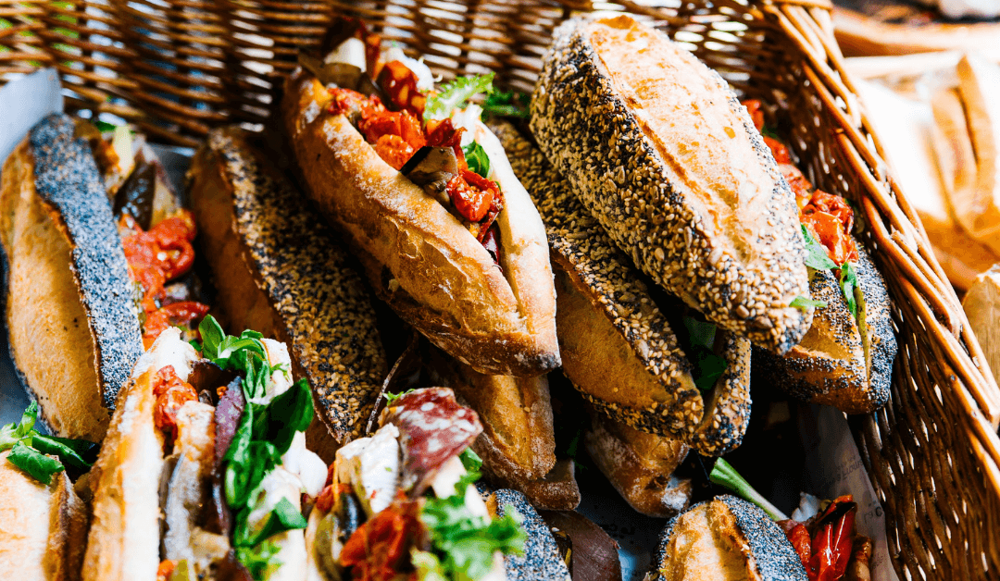
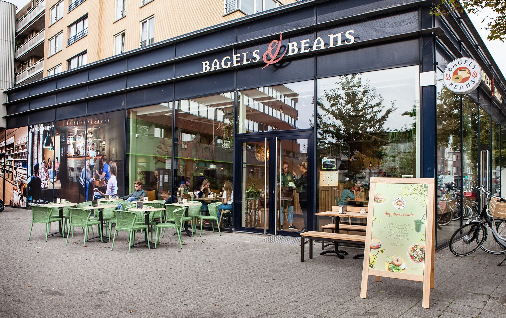

Lunchroom
Aanbieding
warme drank + gebakje
3 euro
De koude winterdagen komen er weer aan, dat betekend gezelligheid en wat nodige warmte. Een kopje koffie, een theetje of warme chocomelk zijn perfect voor in dit koude weer. De zoetigheid is ook zeker niet te missen tijdens de feestdagen. Daarom deze aanbieding, de lekkerst dingen van de winter gecombineert, een warme drank en een gebakje naar keuze voor maar drie euro!


nieuws
We hebben een nieuwe vesteging in Rotterdam centrum! De opening is op 6 december 2019, daarom ook op deze speciale dag een acrtie, een gratis chocolade gebakje bij een besteding van 15 euro! Klik hier om te kijken waar wij allemaal vestigingen hebben.